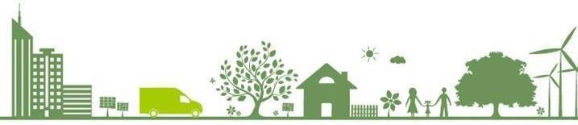

Koç Holding ve Ford Motor Company’den devraldığımız mirasla şekillendirdiğimiz İnsan Kaynakları
vizyonumuz; sürdürülebilir ve yenilikçi İnsan Kaynakları uygulamaları ile Ford Otosan’ı çalışan
bağlılığı en yüksek ve en çok tercih edilen marka konumuna getirmektir. Bunun için çalışanlarımıza
fırsat eşitliğine dayalı, farklılıklara ve etik değerlere saygılı, gelişim odaklı, yüksek performansı
destekleyen kapsayıcı bir iş ortamı sunuyoruz.
İnsan Hakları
İnsan hakları yaklaşımımızı Ford Otosan Çalışma İlkeleri, İnsan Kaynakları Politikası ve Koç Holding’in
imzacısı olduğu Küresel İlkeler Sözleşmesi çerçevesinde yönetiyor, UNGC ilkelerine %100 uyumu
hedefliyoruz. İnsan hakları konusunu sürekli bir iyileştirme alanı olarak görüyor, belirlediğimiz kısa,
orta ve uzun vadeli hedefler doğrultusunda hareket ediyoruz.
Tüm İnsan Kaynakları süreç ve uygulamalarında “fırsat eşitliğine önem vererek, farklılıklara ve etik
değerlere saygılı olmak” prensibi ile çalışmaktayız. Çeşitliliğin ve çok kültürlülüğün organizasyonumuzu
zenginleştirdiğine inanıyor, farklılıkları değer kabul ediyoruz. Çalışanlarımızın yaş, cinsiyet, inanç,
etnik köken veya ayrımcılık unsuru olarak değerlendirilebilecek diğer kişisel nitelikleri İK
süreçlerimizde belirleyici unsur değildir. Eşit işe eşit ücret ve eşit haklar anlayışını benimsiyor,
operasyon larımız dahilinde hiçbir ayrımcı uygulamaya izin vermiyoruz.
Çalışanlarımızın temsilcileri olan sendikaları önemli bir paydaş olarak değerlendiriyoruz. Şirket
politikalarımız doğrultusunda düzenli ve verimli ilişkiler kurarak operasyonlarımız genelinde
çalışanlarımızın toplu sözleşme ve örgütlenme haklarını kullan abilmelerini sağlıyoruz.
Gerçekleştirdiğimiz toplu sözleşmeler kapsamında çalışanlarımıza sunulacak sosyal hakları, iş sağlığı ve
güvenliği uygulamalarını ve diğer temel iş yeri uygulamalarını düzenliyoruz. Ayrıca tüm çalışanlarımızın ve
ailelerinin yaşam standartlarının yükseltilmesi adına yasal hakların ötesinde birçok olanak sunuyoruz.
İnsan hakları anlayışımızın bir parçası olarak, faaliyetlerimiz kapsamında zorla ve zorunlu çalıştırma, çocuk
istihdamı gibi uygulamalara izin vermiyoruz. İnsan hakları konusunda tedarikçi ve iş ortaklarımızdan da
benzer bir yaklaşım benimseme lerini, operasyonları dâhilinde ilkelerimize uyumlu hareket etmelerini
bekliyoruz. Bu nedenle, tedarikçi ve iş ortaklarımızla yaptığımız hizmet ve yatırım sözleşmelerinde
çalışma ilkelerimizi belirterek bu konudaki uyumu garanti altına alıyoruz.
İş’te Eşitlik
Tüm çalışanlarımıza eşitlik temel ilkesiyle yaklaşıyoruz. Bu doğrultuda 2013’te imzalanan İş'te Eşitlik
Bildirgesi kapsamında gerçekleştirdiğimiz faaliyetlerle Ford Otosan çalışanlarına bireysel ve toplumsal
anlamda değer katmaya devam ediyoruz.
İş Sağlığı ve Güvenliği
İş yerlerimizde iş sağlığı ve güvenliği ile ilgili tüm yasal ve kurumsal çalışma şartlarını karşılayarak
güvenli ve sağlıklı bir çalışma ortamı oluşturmak adına Ford Otosan İş Sağlığı ve Güvenliği (İSG)
Politikasını takip ediyoruz. İSG ilkelerimizi çerçeveleyen bu politika tüm iş süreçlerimiz ve
çalışanlarımızın yanı sıra ilgili iş ortaklarımız için de bağlayıcıdır.
Bayilerimiz ve Tedarikçilerimiz
Otomotiv üreticileri için iş devamlılığının, kalitenin, verimliliğinin ve müşteri memnuniyetinin önkoşulu
gelişmiş bir değer zincirinin varlığıdır. Tedarikçi ve bayilerimiz sahip olduğumuz geniş değer
zincirinin içinde önemli bir rol oynamaktadır. Sürdürülebilir bir iş modeli için, bayi ve
tedarikçilerimizin iş başarılarının sürekli gelişimine katkıda bulunuyoruz.
Tedarikçilerimizi kalite, verimlilik, insan hakları, çalışma ortamı ve çevre performansı gibi ana
sürdürülebilirlik alanlarında sistem ve uygulamalar geliştirmeleri yönünde teşvik ediyoruz. Satın alma
sözleşmelerimize bu beklentilerimizi dahil ediyor ve aktif takip edilmesini sağlıyoruz. Faaliyetlerimiz
kapsamında zorla ve zorunlu çalıştırma, çocuk istihdamı gibi uygulama lara izin vermiyor, insan hakları
konusunda tedarikçi ve iş ortaklarımızdan da benzer bir yaklaşım benimsemelerini, operas yonları
dâhilinde ilkelerimize uyumlu hareket etmelerini bekliyoruz. Bu nedenle, tedarikçi ve iş ortaklarımızla
yaptığımız hiz met ve yatırım sözleşmelerinde çalışma ilkelerimizi belirterek bu konudaki uyumu garanti
altına alıyoruz. Aynı zamanda ted arikçi firmalarımıza insan hakları, toplumsal etki ve çalışma hayatı
konularını içeren eğitim programları uyguluyoruz.
Tedarikçilerimizin olduğu gibi bayi ve yetkili servisimizin de iş başarısı faaliyetlerimizin
sürdürülebilirliği için önemlidir. Bayilerimize yönelik olarak tasarladığımız eğitim programlarıyla
teknik yeterliliklerinin, kapasitelerinin ve bilgi düzey lerinin artırılmasına katkı sağlıyoruz.
Periyodik aralıklarla gerçekleştirdiğimiz Bayi Konseyi kanalıyla bayilerimizin bilgi ve görüşlerini
öğreniyor; beklentileri doğrultusunda uygulamalarımızı iyileştirmek üzere adımlar atıyoruz.
Toplum ve Çevremiz
Kurumsal Sosyal Sorumluluk
Yarattığımız katma değerle ülkemizin gelişimine ve uluslararası ölçekte rekabet gücünün artırılmasına katkı
sağlarken, kurumsal sosyal sorumluluk çalışmalarımızla Türkiye’nin sürdürülebilir kalkınma hedeflerine
ulaşmasına destek olmaya çalışıyoruz. Çalışanlarımızın gönüllü katılımıyla, eğitim, sağlık, kültür-sanat
ve spor gibi birçok alanda çalışmalar yürütüyoruz.
Hayaller Bilgi İster
Fırsat eşitliğini odağımıza alırken Ar-Ge ve inovasyondaki gücümüzü gelecek nesillerin hizmetine sunmak
hedefiyle, Young Guru Academy ve Twin iş birliğiyle “Hayaller Bilgi İster” projesini başlattık.
TTürkiye’nin gelişmiş teknolojiler üreten ve bunları dünyaya yayan bir ülke konumuna gelmesi için faaliyet
alanımızda yürüt tüğümüz çalışmaları sürdürülebilirlik yaklaşımımızla ele aldığımız sosyal sorumluluk
projelerine de yansıtarak, “Hayaller Bilgi İster” ile Açık İnovasyon yaklaşımını gençlere ve çocuklara
yayıyoruz; sosyal inovasyona öncülük ediyoruz. Sosyal Sorumluluk 4.0 modelinin öncüsü bu projenin en
fark yaratan özelliklerinden biri de Ford Otosan’ın teknolojik anlamda güçlü yanlarının topluma değer
katacak bir vizyonla harekete geçirilmesidir.
Özellikle yeni teknolojilere erişimi olmayan çocuklara sensörler, kodlama, yapay zeka gibi teknolojileri
kullanarak sorun çözme becerisi kazandırmayı hedeflediğimiz “Hayaller Bilgi İster” projesinin ilk
etabında okullara temel sensör teknolojisi ile otonom sürüş özelliğine sahip programlanabilir araç
setleri göndereceğiz. Çocukların, araç setlerinde hazır olarak sunulan deneyleri çözerek ya da kendi
deneylerini oluşturarak teknoloji ile yapabilecekleri hakkında farkındalık kazan maları amaçlanıyoruz.
Projenin ikinci etabında çocuklarla paylaşacağımız “Yapay Zeka Destekli Otonom Araç Seti” F-Vision
yaklaşımımızı daha somut olarak gösteriyor. Set içerisinde temel görüntü tanıma algoritmaları, blok
kodlama ile yapay zeka model denemeleri, yeni yapay zeka modellerinin eğitimi ve kurulumu, yapay zeka
kullanım senaryoları ile yeni problemler yer alıyor. Proje kapsamında 3 yılda toplam 500 okula otonom ve
yapay zeka araç setleri ulaştırılacak.
Çevre Yönetimi
Çevreyi değerli bir hazine olarak görüyor, gelecek nesiller için en iyi şekilde korunması gerektiğine
inanıyoruz. Sürdürüle bilir gelişimimizin önemli bir parçası olarak gördüğümüz çevreci üretim anlayışımız
doğrultusunda ürünlerimizde olduğu gibi üretim süreçlerimizde de çevresel etkilerin azaltılması için
çalışıyoruz. Bu bağlamda enerji, sera gazı ve hava emis yonları konularının yanı sıra su, sorumlu malzeme
tüketimi, atık yönetimi ve biyoçeşitlilik gibi konularda çevreci ve verimli üretimin geliştirilerek,
olumsuz etkilerinin düşürülmesini hedefliyoruz.
Çevre yönetim anlayışımızın temelini Ford Otosan Çevre ve Enerji Politikası'nda belirtilen ilkeler
oluşturmaktadır. Koç Holding Çevre ve Enerji Politikası, şirket hedeflerimiz, Ford Motor Company Çevre
Politika Mektubu şartları ve uluslar arası standartlarla uyumlu olan Ford Otosan Çevre Politikası tüm
faaliyetlerimiz için bağlayıcıdır. Diğer taraftan çalışan lar, tedarikçi, müteahhit ve ilgili diğer iş
ortaklarımızdan da operasyonlarında Ford Otosan Çevre ve Enerji Politikası’na uyumlu davranışlar
bekliyoruz. Bu kapsamda gerçekleştirdiğimiz çevre eğitimi uygulamalarıyla hem çalışanlarımız ve iş
ortaklarımızın çevre yönetim yeteneklerini geliştiriyoruz hem de toplumun geniş kesimlerinde çevre bilincini
artırmaya çalışıyoruz.
Enerji ve İklim

Fiziki çevrenin yanı sıra sosyal ve ekonomik yaşamda riskler oluşturma potansiyeline sahip olan iklim
değişikliği günümüz ün en önemli küresel sorunlarından biridir. Enerji ihtiyacı ve sera gazı
emisyonlarının yükseliş trendi göz önünde bulundur ulduğunda iklim değişikliğinin çok daha büyük riskler
oluşturma potansiyeline sahip olduğunu öngörebiliyoruz.
İklim değişikliğiyle mücadele çalışmalarını sadece gelecekte yaşam kalitemizi artıracak ya da risklerin
bertarafı için bir zorun luluk olarak değil, aynı zamanda operasyonel maliyetlerin azaltılması, geleceğin
ekonomik yaşamında rekabet avantajı sağla nması için önemli bir yöntem olarak değerlendiriyoruz. Bu
noktada Ford Motor Company ve Koç Topluluğu’nun yayınladığı İklim Değişikliği Stratejileri
çalışmalarımızı yönlendiren izleklerdir. Enerji verimliliği ve sera gazları emisyonlarının azaltılması
çalışmaları iklim değişikliğiyle mücadele faaliyetlerimizin en önemli bölümünü oluşturmaktadır. Bu
çalışmalar bir yandan emisyon miktarını azaltırken diğer yandan da sağladığı maliyet avantajıyla rekabet
gücümüze destek olmaktadır. Bu nedenle enerji verimliliğini sürekli bir iyileştirme alanı olarak görerek
faaliyetlerimizin her sürecinde iyileştirici proje faaliyetleri yürütüyoruz.
Sera gazları gibi üretim sürecimizde oluşan tüm diğer hava emisyon değerleri de kontrol ve iyileştirme
çalışmalarımız kapsamında bulunmaktadır. Bütün üretim lokasyonlarında hava emisyon değerlerini yasal
izinlerde belirtilen periyodlarda ölçüyor ve limit değer lerin çok altında tutuyoruz.
Yeşil Tasarım
Ürün tasarım süreçleriyle birlikte ürün ya da süreçlerin çevresel etkilerinin azaltılması çabalarımızı
başlatıyoruz. Ford Otosan Yeni Proje Çevre ve Enerji Açılarından Gözden Geçirilmesi Prosedürü ile ürün
ya da projelerimizin enerji yoğunluklarını ve çevresel etkilerini yeşil tasarım mantığı çerçevesinde
değerlendiriyoruz. Tasarımlarımızın doğal kaynakların, ekolojik ortamın, biyoçeşitliliğin, iklimin, hava
ve su kalitesinin, toprak ve ormanların korunmasına, enerji, su ve malzemelerin tasarruflu kullanı mına
hizmet etmesini sağlıyoruz. İncelemelerimizde belirlenen bu kriterler açısından herhangi bir risk unsuruna
rastlandığında alternatif bir proje ve ürün tasarım uygulamasına geçiyoruz. Aynı süreci projelerimizin
kabul ve devreye alma aşamalarında da uyguluyoruz.
Ford Otosan olarak ürünlerimizin sorumlu bir şekilde üretilmesini, taşınmasını ve kullanılmasını teşvik etme
konusunda kararlıyız. Bu sebeple kimyasalların kaydı, değerlendirilmesi, yetkilendirilmesi ve
kısıtlanmasıyla ilgili Avrupa Birliği yönetmeliği olan REACH (Registration, Evaluation, Authorisation &
restriction of Chemicals)'in temel amaçlarını destekliyoruz.
Mevcut izin listesinde yer alan “Yüksek Önem Arz Eden Maddeler (SVHC'ler)” ile ilgili olmasından dolayı EC
1907/2006 yönetmeli ğinin 33 (1) maddesini özellikle destekliyoruz. Bir üründe bu maddeler varsa,
bunların güvenli kullanımını garanti etmek önem arz etmektedir. Bu nedenle söz konusu yönetmeliğin,
müşterilerin uygun risk yönetimi önlemlerini almasını sağlamak için tasarlandığını kabul ediyoruz.